Vehicle Insurance Analysis
An end-to-end project covering data preparation, SQL Server database design, and an interactive insurance dashboard.
Power Query · SQL Server · Power BI
View ProjectPortfolio
Explore my projects across data analysis, SQL, Power BI, and data preparation.
An end-to-end project covering data preparation, SQL Server database design, and an interactive insurance dashboard.
Power Query · SQL Server · Power BI
View Project
Exploring economic, population, health, and education indicators using interactive Power BI report pages.
Power BI · Power Query · DAX
View Project
Exploring Netflix titles, content attributes, and data quality.
Data Analysis
View Project
An interactive dashboard project focused on sales and profit performance.
Power BI
View Project
Exploring global energy transition, energy security, critical minerals, and electricity demand. Currently in progress.
Power BI · Data Analysis
View Project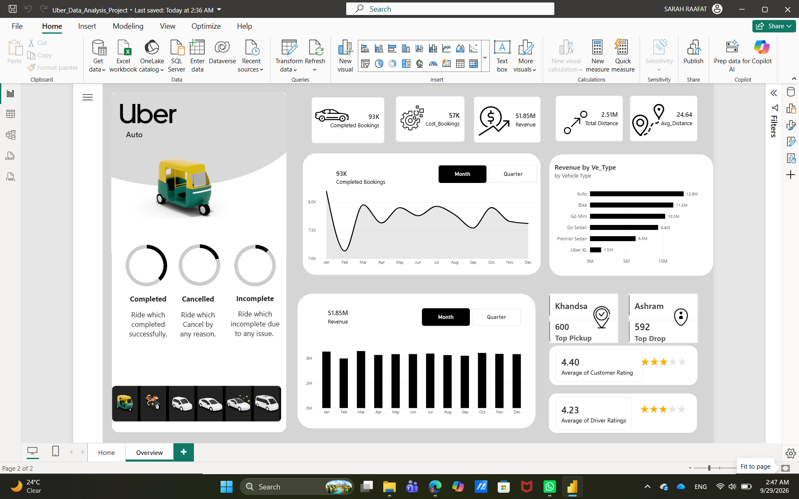
A Power BI analytics project exploring data through interactive visual reports.
Power BI
View Project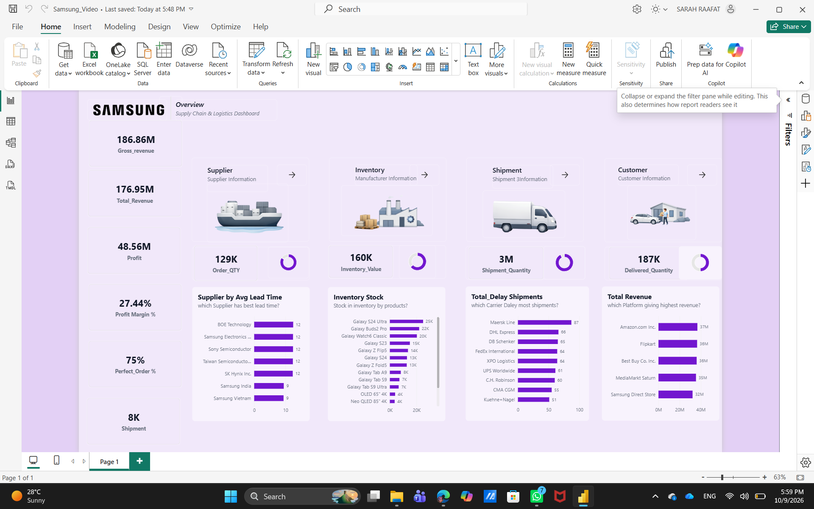
A dashboard project built to present and explore data through Power BI visualizations.
Power BI
View Project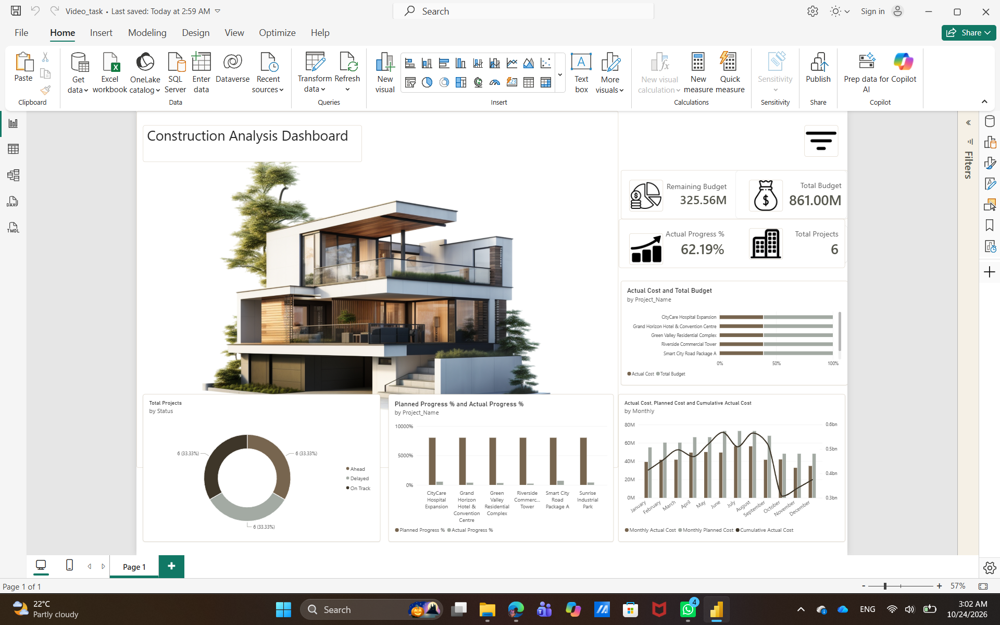
A Power BI dashboard project for presenting project-related data and performance information.
Power BI
View Project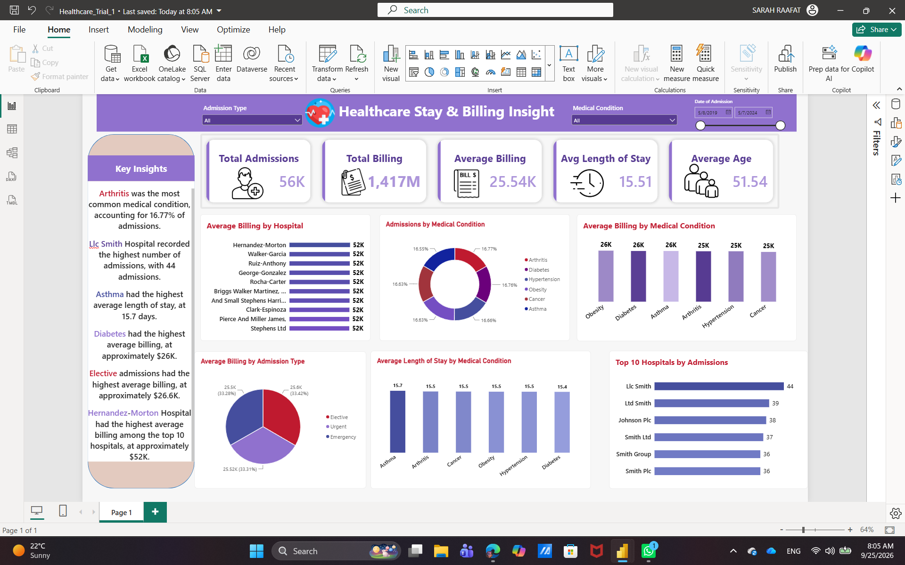
A data analytics project presenting healthcare data through Power BI reporting.
Power BI
View Project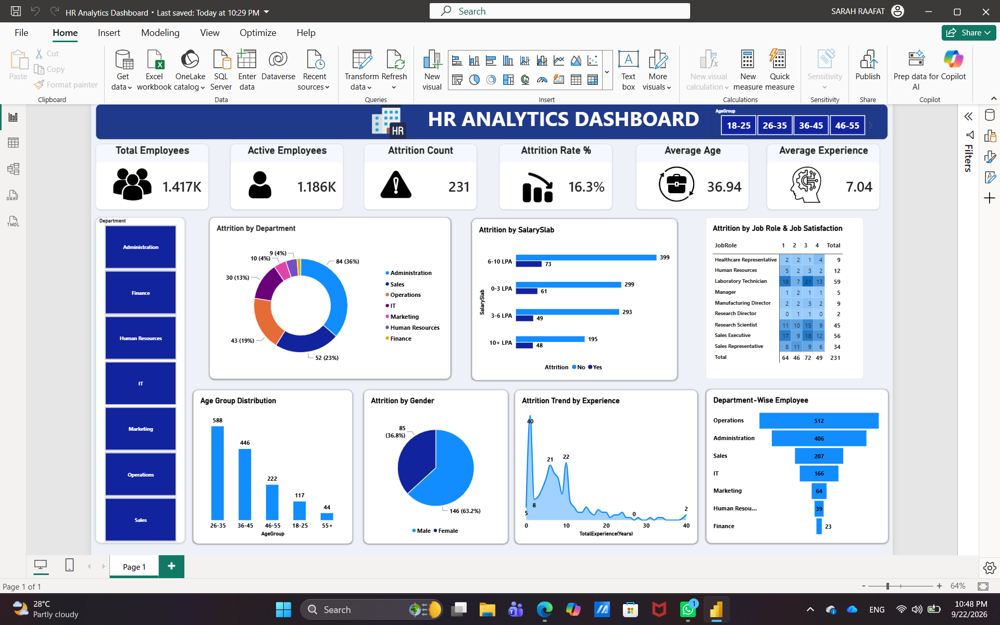
A Power BI project focused on exploring and presenting HR-related data.
Power BI
View Project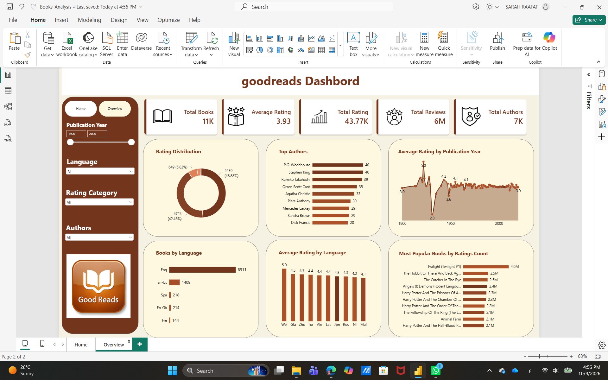
Exploring a books dataset, including book information and reader ratings.
Data Analysis
View Project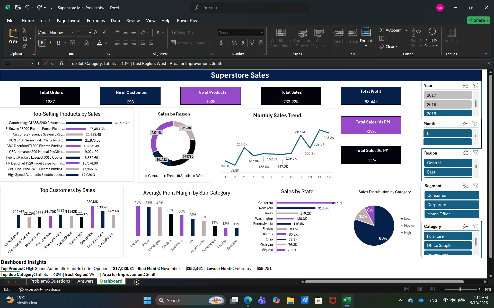
Data analysis project involving data modeling and sales and profit reporting.
Excel · Power Query · Power Pivot
View Project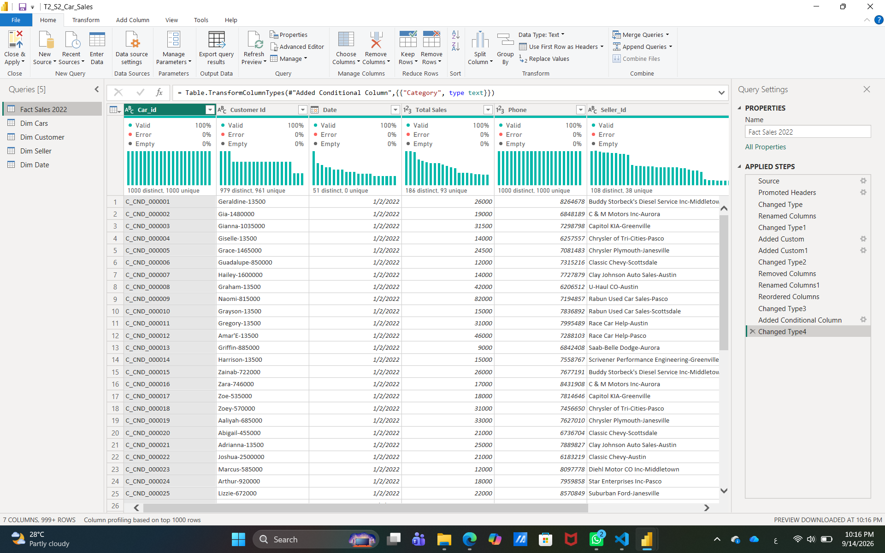
A data cleaning project involving multiple tables, preparing and structuring data for analysis.
Power Query · Power BI
View Project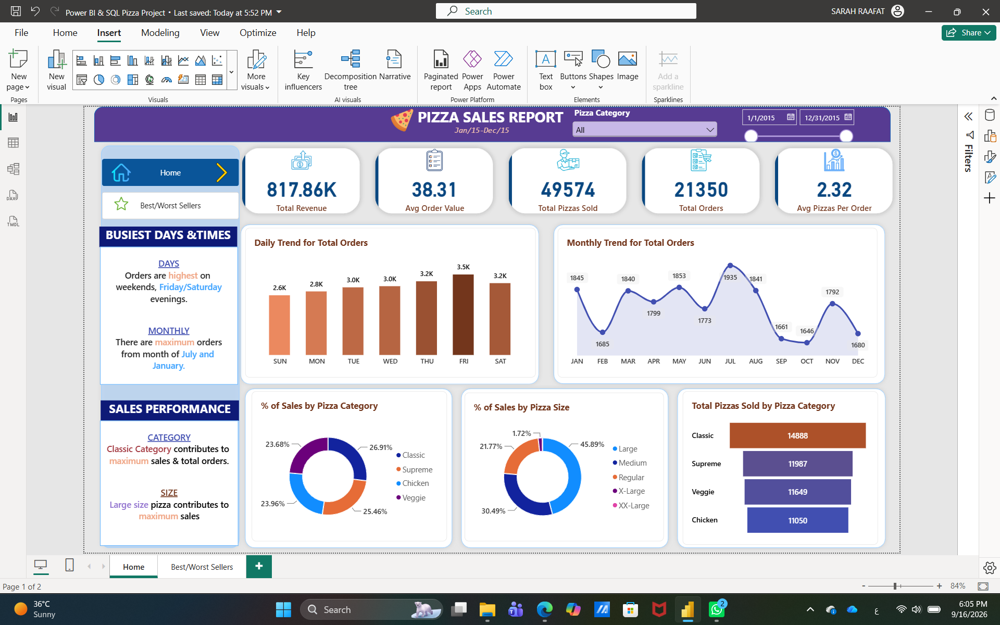
An end-to-end project analyzing sales performance, product trends, and business insights.
SQL Server · Power BI
View Project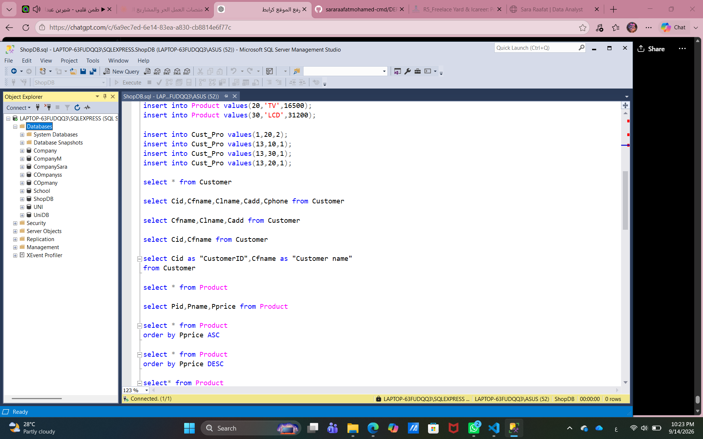
A relational database project covering table relationships, primary and foreign keys, and SQL queries.
SQL Server
View Project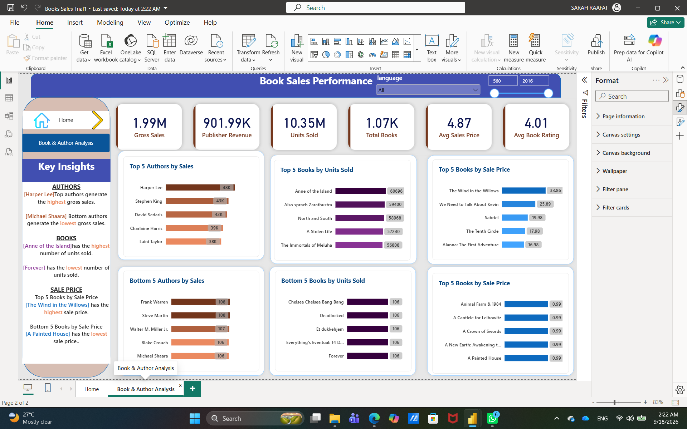
A Power BI project exploring book sales, ratings, authors, genres, languages, and publishing trends.
Power BI · Power Query
View ProjectNo projects found. Try another search or filter.